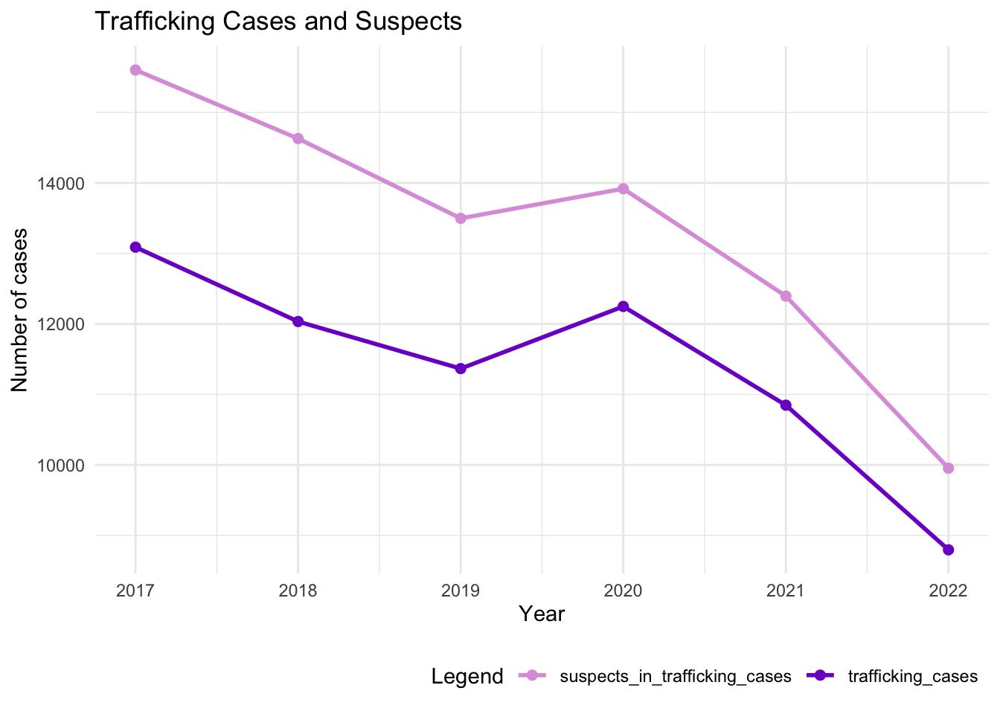
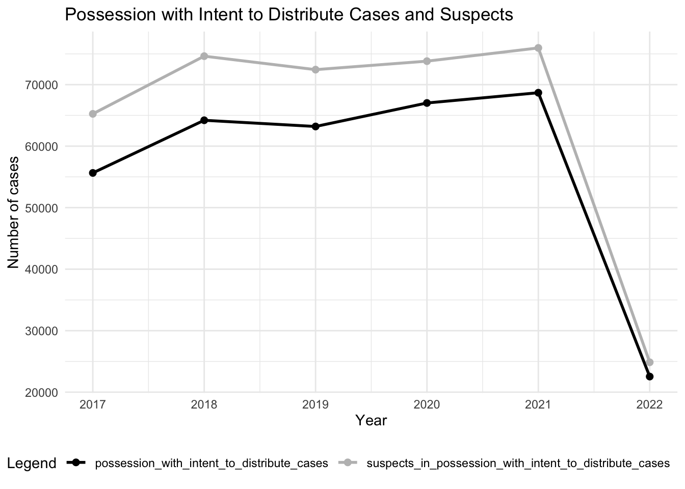

pacman::p_load(sf, raster, spatstat, spdep, sparr, tmap, tidyverse, gridExtra)TH2: Application of Geospatial Analysis Methods to Discover Thailand Drug Abuse at the Province Level
Take Home Exercise 2
TH2.1 Setting the Scene
Drug abuse brings with it significant negative health, financial and social consequences. Yet, illicit drug consumption remains highly prevalent and continues to be a growing problem worldwide. The UNODC has reported an increase in the number of people using illicit drugs to 292 million people worldwide in the decade leading up to 2022. Of these, 228 million people consumed cannabis, 60 million people consumed opiods, 30 million used amphetamines, 23 million used cocaine and 20 million took ecstasy. Further, they found an increase in overdose deaths following the emergence of nitazenes, which is a group of synthetic opioids potentially more dangerous than fentanyl – in several high-income countries. (World Drug Day Report Highlights Spike in Drug Use, Increased Trafficking | UN News, 2024).
The aim of today’s study is to discover:
- If the key indicators of drug abuse and trafficking in Thailand are independent from space,
- If the indicators of drug abuse and trafficking are indeed spatially-dependent, and if so, where the clusters, outliers and hotspots are located,
- How the observations above evolve over time.
TH2.2 The Drug Problem in Thailand
Thailand (2024 GDP per capita - PPP: $23,401; Gini coefficient: 35.1 - medium; HDI: 0.083 - very high) (International Monetary Fund, 2024) (World Bank, n.d.) (United Nations Development Programme, 2024) is located in close proximity to the Golden Triangle, which comprises the northern part of the country along with northern Myanmar and Laos. In 2021, its drug trafficking situation remained critical, with 337,186 drug cases in total. While seizures of ketamine decreased between 2020 and 2021, seizures of methamphetamine, ice and heroin increased in the same period, with heroin seeing the biggest increase from 1873kg in 2020 to 4520kg in 2021 (Kanato et al., 2022).
The maximum penalty for drug trafficking in Thailand, as is neighbouring Laos, Malaysia and Singapore, is death (Thailand, n.d.). Despite this, smugglers have innovated on new routes, through the north and northern borders of the country, and even go so far as to hide shipments in cargo vessels bound for the likes of Singapore, New Zealand, Australia and South Korea. 575 smuggling cases by sea occured in 2021, in which 4554kg of heroin, 2.4 times more than the previous year, were seized (Kanato et al., 2022).
Drug use in the country is as problematic. In 2018, 39% of Thais aged between 15 and 24 were involved in ilicit drugs. Of youth aged between 15 and 19, there are 300000 who need treatment, and a significant majority attend vocational schools (as opposed to grade schools). Kongjareon et al. (2022) found in a study of 638 students in four vocational schools, 11.3% reported poly-drug use. Among LGBT students this figure was 20.2%, and among hetrosexual students 9.8%. Factors contributing to the former’s use of drugs include, among other things, counselling needs, intoxicated sex and GPA.
TH2.3 Importing data and R packages
The R packages we will use today are:
sftmapspatstatspdepfor measures of spatial autocorrelation, andsparr
We will be examining a dataset of drug offences in Thailand between 2017 and 2022 retrieved from Kaggle, superimposed against the provincial boundaries of the country.
thailand <- st_read(dsn="data/geospatial", layer="tha_admbnda_adm1_rtsd_20220121")Reading layer `tha_admbnda_adm1_rtsd_20220121' from data source
`/Users/kendricktty/Gits/smu_cs/is415-site/TakeHome/TakeHome2/data/geospatial'
using driver `ESRI Shapefile'
Simple feature collection with 77 features and 16 fields
Geometry type: MULTIPOLYGON
Dimension: XY
Bounding box: xmin: 97.34336 ymin: 5.613038 xmax: 105.637 ymax: 20.46507
Geodetic CRS: WGS 84thailandSimple feature collection with 77 features and 16 fields
Geometry type: MULTIPOLYGON
Dimension: XY
Bounding box: xmin: 97.34336 ymin: 5.613038 xmax: 105.637 ymax: 20.46507
Geodetic CRS: WGS 84
First 10 features:
Shape_Leng Shape_Area ADM1_EN ADM1_TH ADM1_PCODE
1 2.417227 0.13133873 Bangkok กรุงเทพมหานคร TH10
2 1.695100 0.07926199 Samut Prakan สมุทรปราการ TH11
3 1.251111 0.05323766 Nonthaburi นนทบุรี TH12
4 1.884945 0.12698345 Pathum Thani ปทุมธานี TH13
5 3.041716 0.21393797 Phra Nakhon Si Ayutthaya พระนครศรีอยุธยา TH14
6 1.739908 0.07920961 Ang Thong อ่างทอง TH15
7 5.693342 0.54578838 Lop Buri ลพบุรี TH16
8 1.778326 0.06872655 Sing Buri สิงห์บุรี TH17
9 2.896316 0.20907828 Chai Nat ชัยนาท TH18
10 4.766446 0.29208711 Saraburi สระบุรี TH19
ADM1_REF ADM1ALT1EN ADM1ALT2EN ADM1ALT1TH ADM1ALT2TH ADM0_EN ADM0_TH
1 <NA> <NA> <NA> <NA> <NA> Thailand ประเทศไทย
2 <NA> <NA> <NA> <NA> <NA> Thailand ประเทศไทย
3 <NA> <NA> <NA> <NA> <NA> Thailand ประเทศไทย
4 <NA> <NA> <NA> <NA> <NA> Thailand ประเทศไทย
5 <NA> <NA> <NA> <NA> <NA> Thailand ประเทศไทย
6 <NA> <NA> <NA> <NA> <NA> Thailand ประเทศไทย
7 <NA> <NA> <NA> <NA> <NA> Thailand ประเทศไทย
8 <NA> <NA> <NA> <NA> <NA> Thailand ประเทศไทย
9 <NA> <NA> <NA> <NA> <NA> Thailand ประเทศไทย
10 <NA> <NA> <NA> <NA> <NA> Thailand ประเทศไทย
ADM0_PCODE date validOn validTo geometry
1 TH 2019-02-18 2022-01-22 <NA> MULTIPOLYGON (((100.6139 13...
2 TH 2019-02-18 2022-01-22 <NA> MULTIPOLYGON (((100.7306 13...
3 TH 2019-02-18 2022-01-22 <NA> MULTIPOLYGON (((100.3415 14...
4 TH 2019-02-18 2022-01-22 <NA> MULTIPOLYGON (((100.8916 14...
5 TH 2019-02-18 2022-01-22 <NA> MULTIPOLYGON (((100.5131 14...
6 TH 2019-02-18 2022-01-22 <NA> MULTIPOLYGON (((100.3332 14...
7 TH 2019-02-18 2022-01-22 <NA> MULTIPOLYGON (((101.3453 15...
8 TH 2019-02-18 2022-01-22 <NA> MULTIPOLYGON (((100.3691 15...
9 TH 2019-02-18 2022-01-22 <NA> MULTIPOLYGON (((100.1199 15...
10 TH 2019-02-18 2022-01-22 <NA> MULTIPOLYGON (((101.3994 15...thailand_drug <- read_csv("data/aspatial/thai_drug_offenses_2017_2022.csv") %>% select(fiscal_year, types_of_drug_offenses, no_cases, province_en)Rows: 7392 Columns: 5
── Column specification ────────────────────────────────────────────────────────
Delimiter: ","
chr (3): types_of_drug_offenses, province_th, province_en
dbl (2): fiscal_year, no_cases
ℹ Use `spec()` to retrieve the full column specification for this data.
ℹ Specify the column types or set `show_col_types = FALSE` to quiet this message.thailand_drug# A tibble: 7,392 × 4
fiscal_year types_of_drug_offenses no_cases province_en
<dbl> <chr> <dbl> <chr>
1 2017 drug_use_cases 11871 Bangkok
2 2017 drug_use_cases 200 Chai Nat
3 2017 drug_use_cases 553 Nonthaburi
4 2017 drug_use_cases 450 Pathum Thani
5 2017 drug_use_cases 378 Phra Nakhon Si Ayutthaya
6 2017 drug_use_cases 727 Loburi
7 2017 drug_use_cases 820 Samut Prakan
8 2017 drug_use_cases 69 Saraburi
9 2017 drug_use_cases 127 Sing Buri
10 2017 drug_use_cases 208 Ang Thong
# ℹ 7,382 more rowsTH2.4 Exploratory Data Analysis
The code chunk below prints the total number of each unique type of drug offence cases.
thailand_drug_analysis <- thailand_drug %>%
group_by(types_of_drug_offenses) %>%
summarise(total_cases = sum(no_cases)) %>% ungroup()
thailand_drug_analysis# A tibble: 16 × 2
types_of_drug_offenses total_cases
<chr> <dbl>
1 conspiracy_cases 920
2 drug_use_cases 915529
3 export_cases 84
4 import_cases 860
5 possession_cases 538893
6 possession_with_intent_to_distribute_cases 341283
7 production_cases 56892
8 suspects_in_conspiracy_cases 2332
9 suspects_in_drug_use_cases 930768
10 suspects_in_export_cases 102
11 suspects_in_import_cases 1066
12 suspects_in_possession_cases 566999
13 suspects_in_possession_with_intent_to_distribute_cases 386946
14 suspects_in_production_cases 66247
15 suspects_in_trafficking_cases 79997
16 trafficking_cases 68379There are a total of 8 different types of cases, with another 8 unique values dedicated to suspected instances of cases.
We are particularly interested in drug use, possession and trafficking cases, so we will now attempt to plot the changes in the number of each type of case between 2017 and 2022. This analysis will help us select study periods to analyse later.
TH2.4.1 Plotting changes in drug trafficking cases by time
thailand_drug_trafficking <- thailand_drug %>% filter(types_of_drug_offenses %in% c("trafficking_cases", "suspects_in_trafficking_cases", "possession_with_intent_to_distribute_cases", "suspects_in_possession_with_intent_to_distribute_cases")) %>%
group_by(fiscal_year) %>%
summarise(total_cases = sum(no_cases[types_of_drug_offenses == "trafficking_cases"]),
total_suspect_cases = sum(no_cases[types_of_drug_offenses == "suspects_in_trafficking_cases"]),
total_posession_intent_cases = sum(no_cases[types_of_drug_offenses == "possession_with_intent_to_distribute_cases"]),
total_suspect_posession_intent_cases = sum(no_cases[types_of_drug_offenses == "suspects_in_possession_with_intent_to_distribute_cases"])) %>%
ungroup()
thailand_drug_trafficking# A tibble: 6 × 5
fiscal_year total_cases total_suspect_cases total_posession_intent_cases
<dbl> <dbl> <dbl> <dbl>
1 2017 13089 15603 55644
2 2018 12034 14630 64205
3 2019 11366 13498 63194
4 2020 12248 13918 67014
5 2021 10847 12395 68681
6 2022 8795 9953 22545
# ℹ 1 more variable: total_suspect_posession_intent_cases <dbl>ggplot(data = thailand_drug_trafficking, aes(x = fiscal_year)) +
geom_line(aes(y = total_cases, color = "trafficking_cases"), size = 1) +
geom_point(aes(y = total_cases, color = "trafficking_cases"), size = 2) +
geom_line(aes(y = total_suspect_cases, color = "suspects_in_trafficking_cases"), size = 1) +
geom_point(aes(y = total_suspect_cases, color = "suspects_in_trafficking_cases"), size = 2) +
labs(title = "Trafficking Cases and Suspects",
x = "Year",
y = "Number of cases") +
scale_color_manual(values = c("trafficking_cases" = "purple3", "suspects_in_trafficking_cases" = "plum")) +
theme_minimal() +
theme(legend.position = "bottom",
legend.justification = "right") +
guides(color = guide_legend(title = "Legend"))Warning: Using `size` aesthetic for lines was deprecated in ggplot2 3.4.0.
ℹ Please use `linewidth` instead.
ggplot(data = thailand_drug_trafficking, aes(x = fiscal_year)) +
geom_line(aes(y = total_posession_intent_cases, color = "possession_with_intent_to_distribute_cases"), size = 1) +
geom_point(aes(y = total_posession_intent_cases, color = "possession_with_intent_to_distribute_cases"), size = 2) +
geom_line(aes(y = total_suspect_posession_intent_cases, color = "suspects_in_possession_with_intent_to_distribute_cases"), size = 1) +
geom_point(aes(y = total_suspect_posession_intent_cases, color = "suspects_in_possession_with_intent_to_distribute_cases"), size = 2) +
labs(title = "Possession with Intent to Distribute Cases and Suspects",
x = "Year",
y = "Number of cases") +
scale_color_manual(values = c("possession_with_intent_to_distribute_cases" = "black",
"suspects_in_possession_with_intent_to_distribute_cases" = "gray")) +
theme_minimal() +
theme(legend.position = "bottom",
legend.justification = "right") +
guides(color = guide_legend(title = "Legend"))
# grid.arrange(plot1, plot2, ncol = 2)
# ggplot(data = thailand_drug_trafficking, aes(x = fiscal_year)) +
# # geom_bar(stat = "identity", fill = "red4") +
# geom_line(aes(x = fiscal_year, y = total_cases, color = "trafficking_cases"), size = 1) + geom_point(aes(x = fiscal_year, y = total_cases, color = "trafficking_cases"), size = 2) +
# geom_line(aes(x = fiscal_year, y = total_suspect_cases, color = "suspects_in_trafficking_cases"), size = 1) + geom_point(aes(x = fiscal_year, y = total_suspect_cases, color = "suspects_in_trafficking_cases"), size = 2) +
# geom_line(aes(x = fiscal_year, y = total_posession_intent_cases, color = "possession_with_intent_to_distribute_cases"), size = 1) + geom_point(aes(x = fiscal_year, y = total_posession_intent_cases, color = "possession_with_intent_to_distribute_cases"), size = 2) +
# geom_line(aes(x = fiscal_year, y = total_suspect_posession_intent_cases, color = "suspects_in_possession_with_intent_to_distribute_cases"), size = 1) + geom_point(aes(x = fiscal_year, y = total_suspect_posession_intent_cases, color = "suspects_in_possession_with_intent_to_distribute_cases"), size = 2) +
# labs(title = "Drug trafficking and suspected cases by year",
# x = "Year",
# y = "Number of cases") +
# scale_color_manual(values = c("trafficking_cases" = "purple3", "suspects_in_trafficking_cases" = "plum", "possession_with_intent_to_distribute_cases" = "black", "suspects_in_possession_with_intent_to_distribute_cases" = "gray")) +
# theme_minimal() +
# theme(legend.position = "bottom",
# legend.justification = "right") +
# guides(color = guide_legend(title = "Legend"))The number of trafficking cases generally trended downwards between 2017 and 2022, though there was a momentary increase between 2019 and 2020. Meanwhile the number of posession cases with intent to distribute rose steadily until 2021, before plunging in 2022.
TH2.4.1 Plotting changes in drug use cases by time
thailand_drug_trafficking <- thailand_drug %>% filter(types_of_drug_offenses %in% c("drug_use_cases", "suspects_in_drug_use_cases", "possession_cases", "suspects_in_possession_cases")) %>%
group_by(fiscal_year) %>%
summarise(total_use_cases = sum(no_cases[types_of_drug_offenses == "drug_use_cases"]),
total_suspect_use_cases = sum(no_cases[types_of_drug_offenses == "suspects_in_drug_use_cases"]),
total_posession_cases = sum(no_cases[types_of_drug_offenses == "possession_cases"]),
total_suspect_posession_cases = sum(no_cases[types_of_drug_offenses == "suspects_in_possession_cases"])) %>%
ungroup()
thailand_drug_trafficking# A tibble: 6 × 5
fiscal_year total_use_cases total_suspect_use_cases total_posession_cases
<dbl> <dbl> <dbl> <dbl>
1 2017 91444 93895 90845
2 2018 146761 150049 100941
3 2019 177078 179823 104365
4 2020 141570 141761 87997
5 2021 231406 235803 93976
6 2022 127270 129437 60769
# ℹ 1 more variable: total_suspect_posession_cases <dbl>ggplot(data = thailand_drug_trafficking, aes(x = fiscal_year)) +
# geom_bar(stat = "identity", fill = "red4") +
geom_line(aes(x = fiscal_year, y = total_use_cases, color = "drug_use"), size = 1) + geom_point(aes(x = fiscal_year, y = total_use_cases, color = "drug_use"), size = 2) +
geom_line(aes(x = fiscal_year, y = total_suspect_use_cases, color = "suspects_in_drug_use_cases"), size = 1) + geom_point(aes(x = fiscal_year, y = total_suspect_use_cases, color = "suspects_in_drug_use_cases"), size = 2) +
geom_line(aes(x = fiscal_year, y = total_posession_cases, color = "possession_cases"), size = 1) + geom_point(aes(x = fiscal_year, y = total_posession_cases, color = "possession_cases"), size = 2) +
geom_line(aes(x = fiscal_year, y = total_suspect_posession_cases, color = "suspects_in_possession_cases"), size = 1) + geom_point(aes(x = fiscal_year, y = total_suspect_posession_cases, color = "suspects_in_possession_cases"), size = 2) +
labs(title = "Drug use and suspected cases by year",
x = "Year",
y = "Number of cases") +
scale_color_manual(values = c("drug_use" = "skyblue1", "suspects_in_drug_use_cases" = "green3", "possession_cases" = "red2", "suspects_in_possession_cases" = "yellow3")) +
theme_minimal() +
theme(legend.position = "bottom") +
guides(color = guide_legend(title = "Legend"))
Drug use and suspected use cases
References
- International Monetary Fund. (2024, April 16). World Economic Outlook Database, April 2024 Edition: Thailand. https://www.imf.org/en/Publications/WEO/weo-database/2024/April
- Kongjareon, Y., Samoh, N., Peerawaranun, P. et al. Pride-based violence, intoxicated sex and poly-drug use: a vocational school-based study of heterosexual and LGBT students in Bangkok. BMC Psychiatry 22, 148 (2022). https://doi.org/10.1186/s12888-022-03777-7
- Kanato, M., Sarasiri, R., & Leyatikul, P. (Eds.). (2022). ASEAN drug monitoring report 2021. ASEAN Narcotics Cooperation Center.
- Thailand. (n.d.). Hands-Off Cain. Retrieved 23 September 2024, from https://www.handsoffcain.info/bancadati/asia-middle-east-australia-and-oceania/thailand-17000464
- United Nations Development Programme. (2024, March 13). Human Development Report 2023/2024 (PDF). Retrieved September 23, 2024, from https://hdr.undp.org/sites/default/files/reports/3503/hdr2023-24reporten.pdf
- World Bank. (n.d.). Gini index. Retrieved September 23, 2024, from https://www.worldbank.org/en/topic/poverty/brief/gini-index
- World Drug Day report highlights spike in drug use, increased trafficking | UN News. (2024, June 26). United Nations. https://news.un.org/en/story/2024/06/1151446